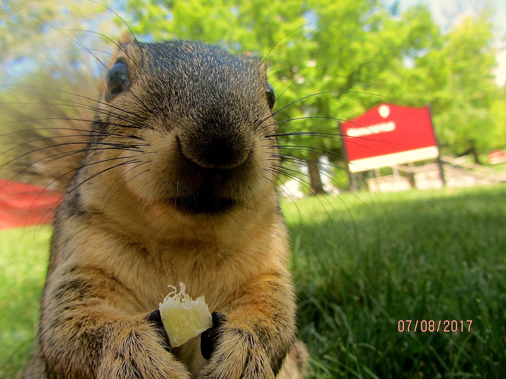

Charlotte
Charlotte is a very nice squirrel.
She likes acorns, boy squirrels, and Pink Floyd.
Charlotte is the OG of Squirrels of IU. She was the first to approach
the club and is kind of a big deal at IU.
Charlotte has 3 children: Cashew, Acorn, and Walnut. See them here:
Did you know...
- Charlotte once threw a boy squirrel down a tree?
- She loves cashews.
- Charlotte is an avid reader of Terry Pratchett's Discworld series.
Charlotte tends to hang around...